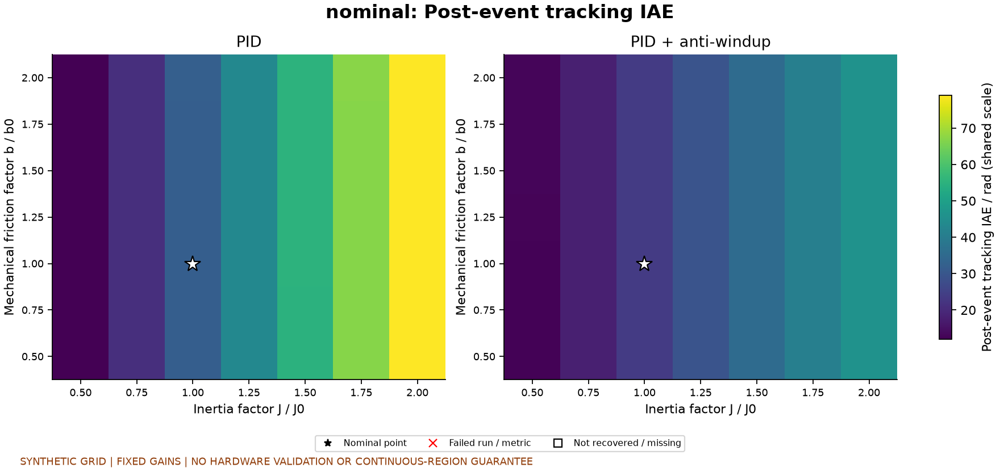
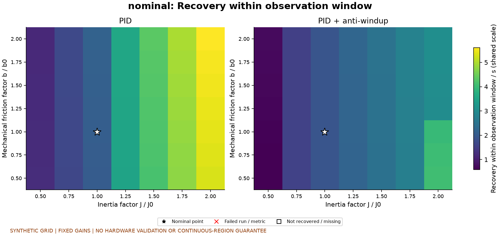
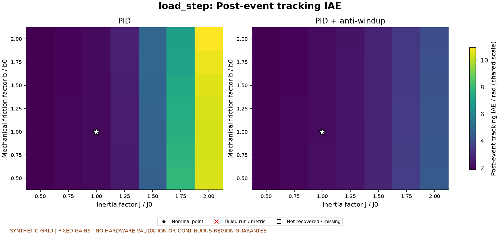
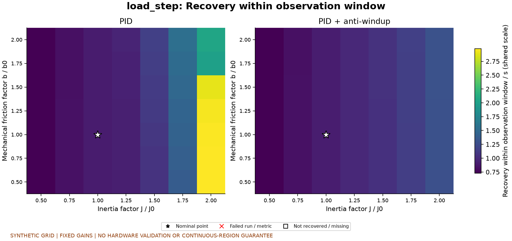
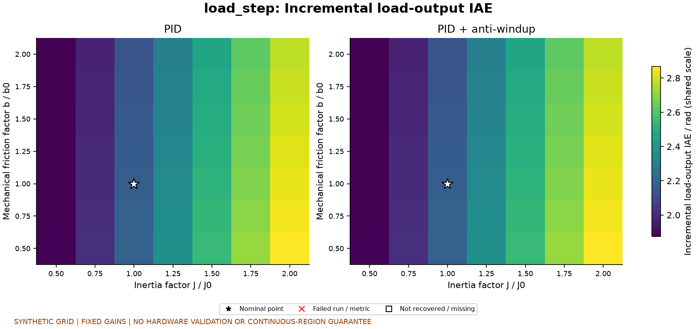
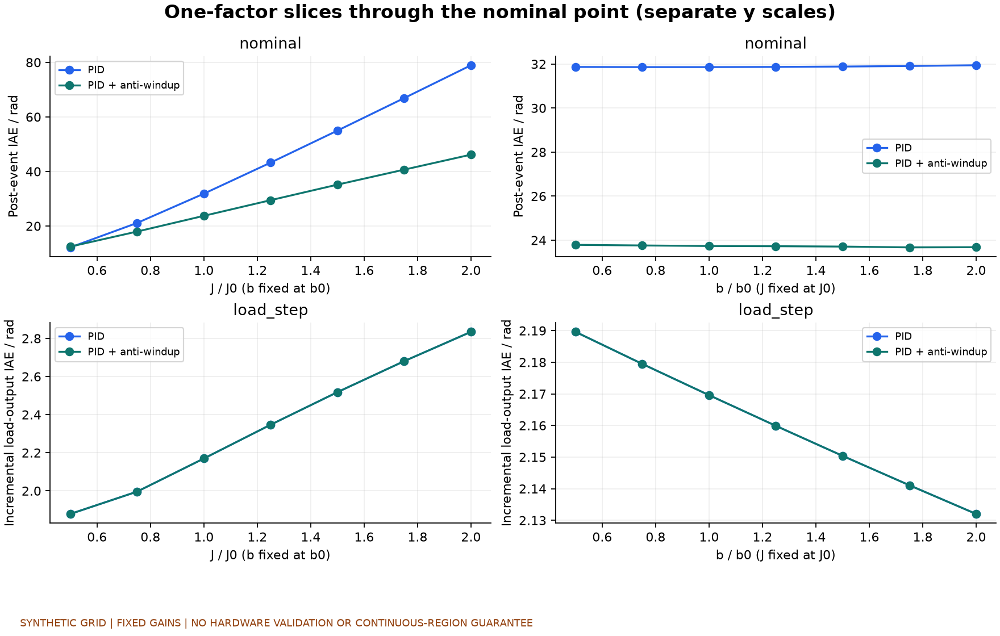
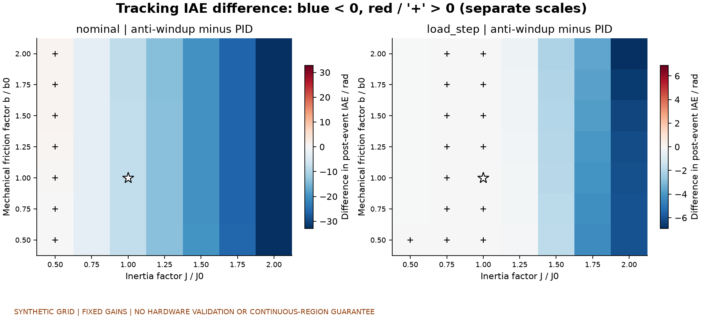

合成仿真，未经硬件验证。J、b按人为设定的网格变化；范围不是实测公差或概率分布。每次重新创建对象和控制器；不重新调参。单次运行是记录单位，采样点不是独立重复。
共记录 196 次，失败 0 次。正常跟踪与负载阶跃分别解释。事件后跟踪误差仍可能包含残余起步瞬态。
增量负载指标将同参数、同控制器的有/无负载输出逐点相减后取绝对值积分，区间为4至12秒；不是两项IAE相减，也不是稳态抗扰性能的单独证明。
最大值只覆盖已运行的有效离散网格点，不能解释为连续区域的最坏情况或鲁棒稳定性保证。未恢复、运行失败和指标缺失分别标记，未用0代替。
机械摩擦b只是总阻尼b+Kt·Ke/R的一部分。J与b相同百分比的变化并不代表相同动态影响。
预先约定的计划 · 逐次指标CSV · 配置与轨迹指纹 · 权威完成状态
| 场景 | 控制器 | 网格点数 | 标称事件后IAE/rad | 有效点最大IAE/rad | 未恢复 | 失败 |
|---|---|---|---|---|---|---|
| nominal | pid | 49 | 31.86046146849484 | 79.06002873991548 | 0 | 0 |
| nominal | pid_antiwindup | 49 | 23.736718504390034 | 46.243580958697606 | 0 | 0 |
| load_step | pid | 49 | 2.111435327641526 | 10.929517078404785 | 0 | 0 |
| load_step | pid_antiwindup | 49 | 2.1522859053655834 | 4.413498994677541 | 0 | 0 |






